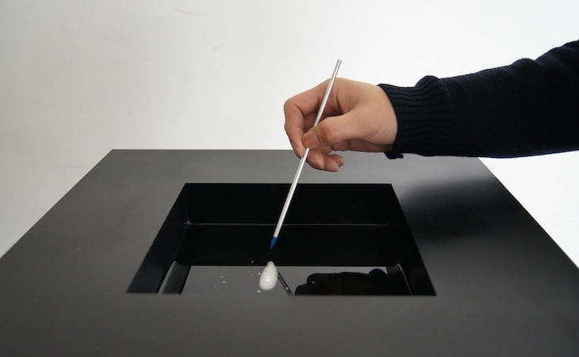
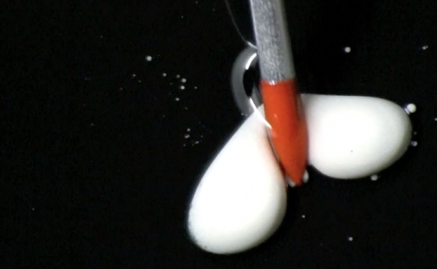
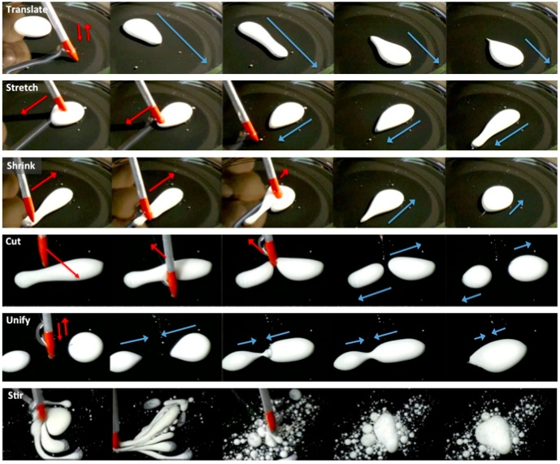
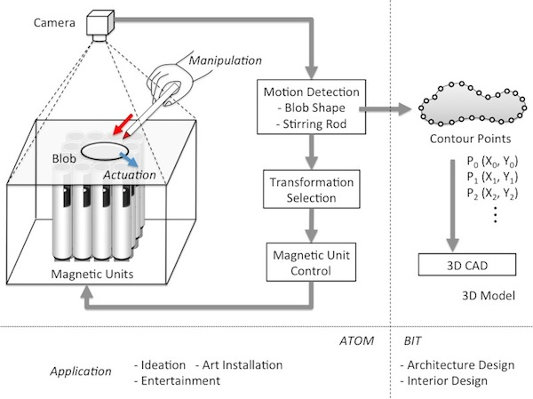

<!DOCTYPE html>
<html>
<head>
 <title>Akira Wakita Laboratory　-慶應義塾大学脇田玲研究室-</title>


  <meta charset="utf-8">
  <meta name="viewport" content="target-densitydpi=device-dpi, width=1280, maximum-scale=1.0, user-scalable=yes">
  <meta name="keywords" content="Fabcell, ファブセル, UNDA, origamic I/O, access to materials, transience, blob motility, anabiosis, SMAAD surface, intuino, kerido, algorithmic couture, wearable synthesis, wakita lab, keio, SFC, XD, 脇田研, 脇田研究室, 脇田玲, 慶応, 慶應, デザイン, メディアアート, コンピュテーショナルデザイン, スマートマテリアル, 大学, 研究室, CAD, CAAD, デザインツール, デザインマテリアル
" />

  <!--OGP-->
  <meta name="description" content="慶應義塾大学脇田玲研究室のウェブサイトです。">
  <meta property="og:title" content="Akira Wakita Laboratory">
  <meta property="og:url" content="http://wakita.sfc.keio.ac.jp/">
  <meta property="og:image" content="http://wakita.sfc.keio.ac.jp/common/img/og/og.jpg">
  <meta property="og:description" content="慶應義塾大学脇田玲研究室のウェブサイトです。">
  <meta property="og:site_name" content="Akira Wakita Laboratory">


  <!--CSS-->
  <link rel="stylesheet" href="../common/css/inner05.css" />
  <!--JS_jQuery-->
  <script src="https://ajax.googleapis.com/ajax/libs/jquery/1.6.2/jquery.min.js"></script>

  <!--JS-->
  <script src="../common/js/class/mainTest.js"></script>
  <script src="../common/js/class/fade.js"></script>
  <script src="../common/js/libs/jquery-1.10.1.min.js"></script>
  <script src="../common/js/libs/langswitcher.js"></script>
  <script src="../common/js/libs/jquery.cookie.js"></script>

  </head>

  <body>

  	<!--fluidDevision-->
    <header></header>

   	<nav>
    	<div id="title">
    	<a href="../index.html">
    		Wakita<br>
    		Laboratory<br>
    		Keio SFC
    	</a>
    	</div>

			<ul id="fade-in2" class="dropmenu">
				<li class="index"><a href="../index.html">WORKS</a>

				<!--
					<ul>
		      			<li><a href="#first-division">devision1</a></li>
						<li><a href="#second-division">devision2</a></li>
						<li><a href="#third-division">devision3</a></li>
		    		</ul>
		        -->
				</li>
				<li><a href="../about.html">ABOUT</a></li>
				<li><a href="../news/news2014.html">NEWS</a></li>
				<li><a href="../publication/publication2014.html">PUBLICATION</a></li>
				<li><a href="http://wktlab.tumblr.com">BLOG</a></li>
				<li><a href="../contact.html">CONTACT</a></li>
			</ul>

			<div class="lang-switch">
				<a id="en">EN</a>
				<a id="ja">JP</a>
			</div>

			<!--langswitcherのバグ回避のため-->
			<span class="slash"> / </span>


			
			<div class="switch-icon">
				<a class="tate" href="../index.html">
					
				</a>
				<a class="yoko" href="../sub-index.html">
					
				</a>
			</div>

			<div class="xd">

				<a href="http://www.sfc.keio.ac.jp">
					<div class="strong">Keio University SFC</div>
					<p>
						Faculty of Environment and<br>
						Information Studies
					</p>
				</a>

				<a href="http://xd.sfc.keio.ac.jp">
					<p>
						Graduate School of Media and<br>
						Governance (X-DESIGN)			
					</p>
				</a>
			</div><!--/.xd-->

			<!--<footer id="footer">
				<p class="copyright">&copy; Akira Wakita Laboratory</p>
			</footer>-->
    </nav>

    <!--cntetnsStage-->

    <div id="wrap">

    	<!-- firstDevsion -->
    	<article>
	      <section id="first-division">
	      	<div class="image-container">
		      	<div class="top01-image">	
		      				
		      	</div>
		      	<div class="title">
		      		<p>Blob Manipulation</p>
		      		<p class="yoko">2012</p>
		      	</div>
		  			<div class="right-message01" style="font-size: 13px;">
		  				
		  				<p class="en">INTERACTION WITH SOFT MATTER</p>
		  				<p class="ja">ソフトマターとのインタラクション</p>

		  				<p class="en" style="text-align: justify;">
			  				Blob Manipulation is an interaction technique with fluidic soft matter. Most of the soft matters are substances between liquid and solid and possess viscoelasticity. We focus on this materiality and propose a novel interaction technique. A stirring rod is used as the input tool. When the system detects a user input such as touching,	rubbing	or	tapping,	the	corresponding transformation will be executed. Six basic operations were designed to transform fluidic soft matter geometrically and topologically. Rheological user interface associated with metamorphose is expected to pioneer new possibilities for design, education and entertainment.<br><br>
						</p>
						<p class="ja" style="text-align: justify;">
							Blob Manipulationは流動的ソフトマターとのインタラクションを実現する一手法である。ソフトマターの多くは液体と固体の中間である粘弾性を有する。我々はこの性質に着目し、斬新なセンシング及びアクチュエーションの手法を提案する。入力には撹拌棒を用いる。システムは、触れる、擦る、タップするなどの操作を検知し、それにふさわしい形状変換をソフトマターに適用する。ソフトマターを幾何的かつ位相的に変形するために、六つの基本操作(Word)と、その組み合わせによるデザインアプローチ(Idiom, Sentences)をデザインした。モーフィングを伴う流動的インターフェイスの実現により、デザイン、教育、娯楽に新しい可能性を与えることが期待される。
<br></br>
						</p>

						<p class="en">MATERIALIZED METABALL</p>
		  				<p class="ja">メタボールの物質化</p>

		  				<p class="en" style="text-align: justify;">
			  				Blob Manipulation is the system to implement shape modeling and control of magnetic slime called blob like metaballs in computer graphics. This system is composed of a water tank where the magnetic slime is put, an array of electromagnets set below the tank, and a control circuit. <br><br>
						</p>
						<p class="ja" style="text-align: justify;">
							Blob Manipulationは、blobと呼ばれる磁性スライムを用いて、CGにおけるメタボールのような形状生成とその制御を実現するシステムである。 このシステムは、磁性スライムの入った水槽、その下に設置された電磁石の配列とその制御回路から構成される。<br><br>
						</p>


						
					
		  			</div>
		  			<div class="left-message01" style="margin-bottom: 100px;">

		  				<p class="en" style="text-align: justify;">
		  					Turning on an electromagnet generates the attractive force at the corresponding blob and the surrounding blobs will gather to it to change the shape.<br><br>
		  				</p>
		  				<p class="ja" style="text-align: justify;">
		  					 ある電磁石をONにすると、その位置に引力が発生し、周囲のblobが引き寄せられることで流体形状が変化する。 複数の電磁石のON/OFFとPWMを制御することで多様な形状生成が可能である。<br><br>
		  				</p>
		  				
						<p class="en">THE SYSTEM ARCHITECTURE</p>
		  				<p class="ja">変形可能物質のアーキテクチャ</p>

		  				<p class="en" style="text-align: justify;">
							The blob shape and the movement of the stirring rod are detected by the camera set on the ceiling above the water tank and sent to the software. According to the detected blob shape and rod movement, the software determines an appropriate transformation operation and sends the corresponding control command to the electronic circuit of the magnetic units.<br><br>
						</p>
						<p class="ja" style="text-align: justify;">
							blobの形状と撹拌棒の動きは水槽の上に設置されたウェブカメラを通してキャプチャされopenFrameworksと独自GUIライブラリで記述された画像処理ソフトウェアに送られる。ソフトウェアはblobの形と撹拌棒の動きの組み合わせに応じて、ふさわしい変形操作の単語を選択し、磁力ユニットの制御コマンドをArduinoで組まれた電子回路に送る。<br><br>
						</p>

						<p class="en">TOWARD THE REALIZATION OF T-1000</p>
		  				<p class="ja">T-1000の実現は可能か？</p>

		  				<p class="en" style="text-align: justify;">
							if we can control fluid shapes flexibly as seen in T-1000, the fluid metal robot appearing in the movie “Terminator 2”, organic shape representation or morphing-based transformation will be realized. The fluidic interface associated with such transformation will pioneer big possibilities of design, education or entertainment.
						</p>
						<p class="ja" style="text-align: justify;">
							映画"Terminator 2"に登場する流体金属ロボットT-1000のように、流体の形状を柔軟に制御できるようになれば、有機的な形状表現やモーフィングに基づく変形を伴う表現が実現する。形状変化を伴う流体的インターフェイスの実現は、デザイン、教育、娯楽に大きな可能性を開くであろう。
						</p>
		  			</div>
		      	<div class="top02-image">
		      		<iframe width="780" height="480" src="https://www.youtube.com/embed/-wxpdUEhviU" frameborder="0" allowfullscreen></iframe>
		      	</div>
					<div class="right-message01" style="width: 760px;">

						

							<div class="sub-title" style="margin-top: 25px;">
		  					PUBLICATION / EXHIBITION
		  				</div>

		  				<div class="press">
			  				<p class="en">
				  				- Techfest 2011, as an invited work of Japan Media Art Festival, Bombay, India, 6-8 January, 2012. / Techfest 2011, an invited work of Japan Media Art Festival, Mumbai<br>
								- Akira Wakita, Akito Nakano, Blob Manipulation, In Proceedings of TEI '12 (Sixth International Conference on Tangible, Embedded and Embodied Interaction), ACM, pp.299-302, Kingston, Canada, 2012.<br>
								- Akito Nakano, Akira Wakita, The Development and Interaction Study of Magnetic Gel Shape Display, IPSJ SIG Technical Reports, 54(4), 1528-1537, 2013-04-15
							<p class="ja">
								- Techfest 2011, as an invited work of Japan Media Art Festival, Bombay, India, 6-8 January, 2012. / Techfest 2011, an invited work of Japan Media Art Festival, Mumbai<br>
								- Akira Wakita, Akito Nakano, Blob Manipulation, In Proceedings of TEI '12 (Sixth International Conference on Tangible, Embedded and Embodied Interaction), ACM, pp.299-302, Kingston, Canada, 2012.<br>
								- 中野亜希人, 脇田玲, 磁性ゲル形状ディスプレイの開発とインタラクション手法の検討, 情報処理学会論文誌 Vol.54 No.4, pp.1528-1537
							</p>

						
						</div>

						<div class="sub-title">
			      			DESIGN TEAM
			      		</div>
			  				<p class="en" style="margin-bottom: 40px;">
				  				Concept & Direction : Akira Wakita<br>
								Hardware & Software : Akito Nakano
							</p>
							<p class="ja" style="margin-bottom: 40px;">
								コンセプト & ディレクション : 脇田玲<br>
								ハードウェア & ソフトウェア : 中野亜希人
							</p>


						</div>

						

						
			  		</div>
		  			

		  			<div class="top-image03" >
		  				
		  			</div>

		  			<div class="top-image03">
		  				
		  			</div>
		  			
		  			<div class="top-image03">
		  				
		  			</div>

		  			
		      </div><!--/.image-container-->
	      </section>
	    </article>

    </div><!--\#wrap -->
  </body>
</html>